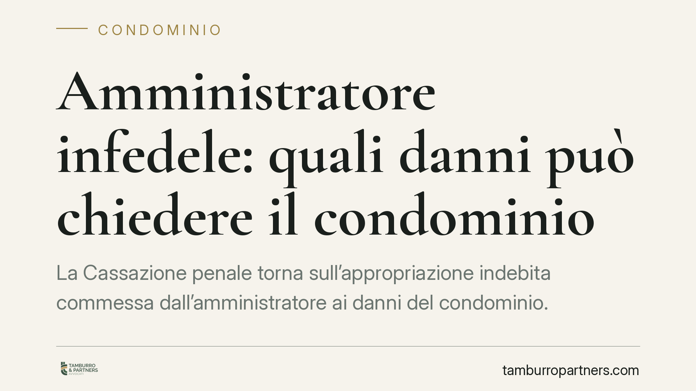

Amministratore infedele: quali danni può chiedere il condominio
La Cassazione penale torna sull'appropriazione indebita commessa dall'amministratore ai danni del condominio. Oltre alla restituzione delle quote sottratte, i giudici ammettono il risarcimento del danno non patrimoniale e d'immagine. Precisano inoltre che la sola incensuratezza non basta per ottenere le attenuanti generiche. Vediamo cosa cambia per i condòmini e come muoversi.

Il caso
Un amministratore sottrae somme versate dai condòmini a titolo di quote di gestione. La condotta integra il reato di appropriazione indebita, punito dall'art. 646 cod. pen.: chi, per procurarsi un ingiusto profitto, si appropria del denaro altrui di cui ha il possesso per ragioni d'ufficio.
La questione affrontata dalla Corte non riguarda l'esistenza del reato, ormai pacifica, ma il perimetro del risarcimento dovuto al condominio costituito parte civile e la valutazione delle circostanze attenuanti in favore dell'imputato.
Due piani distinti: restituzione e danno
È essenziale tenere separati due profili che spesso vengono confusi.
Il primo è la restituzione delle somme sottratte. Si tratta di ripristinare la situazione patrimoniale precedente: l'amministratore deve riconsegnare quanto indebitamente trattenuto. È un piano meramente ripristinatorio.
Il secondo è il risarcimento del danno, che va oltre la semplice restituzione. Qui rientra, secondo la pronuncia, anche il danno non patrimoniale — disciplinato dall'art. 2059 cod. civ. — nella sua componente di danno all'immagine. L'appropriazione da parte di chi è chiamato a gestire con fiducia il denaro altrui lede la reputazione della compagine condominiale e il rapporto fiduciario che la tiene insieme.
I due piani sono cumulabili: la restituzione non assorbe il risarcimento, e viceversa.
Il nodo del condominio come soggetto danneggiato
Va usata cautela su chi sia effettivamente titolare del diritto al risarcimento. Il condominio, secondo l'impostazione tradizionale, è un ente di gestione privo di autonoma personalità giuridica: amministra interessi comuni ma non è una persona giuridica distinta dai condòmini.
Da qui una distinzione delicata: il danno all'ente condominiale e il danno eventualmente subìto dai singoli condòmini non coincidono necessariamente. In sede di costituzione di parte civile occorre quindi definire con precisione chi agisce, a quale titolo e per quale voce di danno, per evitare contestazioni sulla legittimazione.
Le attenuanti: l'incensuratezza non basta
La Corte ribadisce un principio ormai consolidato in giurisprudenza: la mera assenza di precedenti penali non è sufficiente, da sola, a giustificare le attenuanti generiche previste dall'art. 62 bis cod. pen.
Il giudice, nel valutare l'opportunità di concederle, deve tener conto dei criteri indicati dall'art. 133 cod. pen. — gravità del reato, intensità del dolo, condotta complessiva. L'incensuratezza è uno degli elementi valutabili, ma non un automatismo. In un contesto di abuso della fiducia connesso alla carica, questo peso risulta ulteriormente ridimensionato.
Un punto da verificare sulla procedibilità
Merita attenzione il regime di procedibilità dell'appropriazione indebita, modificato nel tempo dagli interventi di riforma del sistema penale. La disciplina della procedibilità a querela è stata oggetto di plurime modifiche normative: prima di valutare tempi e modalità dell'azione, consigliamo di verificare il regime vigente alla data dei fatti, poiché incide direttamente sui termini per attivarsi e sulla necessità o meno della querela della persona offesa.
Cosa cambia per i condòmini
Per l'assemblea e i singoli condòmini la pronuncia conferma che la reazione a una gestione infedele non deve limitarsi al recupero delle somme. Esiste uno spazio per chiedere anche il ristoro del pregiudizio non patrimoniale, a condizione di impostare correttamente la domanda e di documentare il danno.
Resta fermo un dato di realtà: la giurisprudenza fissa principi, non assicura un risultato. Ogni esito dipende dalle prove, dalla corretta costituzione in giudizio e dalla valutazione del caso concreto.
Cosa fare in concreto
- Raccogliete la documentazione contabile: estratti conto, bilanci, verbali di assemblea e ogni prova dei versamenti e delle somme mancanti.
- Deliberate in assemblea l'azione da intraprendere e conferite mandato chiaro, definendo chi agisce e a quale titolo.
- Valutate la querela verificando il regime di procedibilità applicabile e i relativi termini: non attendete la definizione dei profili civilistici.
- Costituitevi parte civile nel processo penale distinguendo con precisione la domanda di restituzione da quella risarcitoria, e specificando le voci di danno.
- Verificate gli estremi della pronuncia nel testo integrale prima di utilizzarla come riferimento in giudizio.
---
Contributo informativo a cura di Tamburro & Partners - Avv. Giuseppe Tamburro. Non costituisce parere legale.
Ogni condominio ha una storia a sé.
Se gestisci un'amministrazione e vuoi un confronto su una specifica questione condominiale, scrivi allo studio. Ti rispondiamo entro un giorno lavorativo.